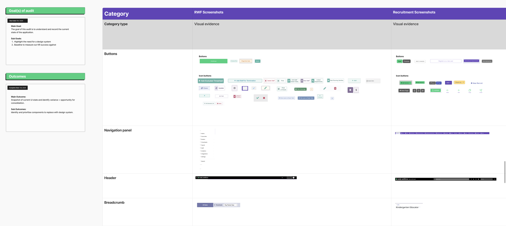

ReadyTech
Building ReadyTech's first Design System: the strategy behind the start
Design Systems Strategy
UI Audit
0 to 1
Cross-functional Buy-in
Where this stands today
This is an early-stage initiative, not a finished system. What follows is the audit that built the case for it, and the strategy guiding what gets prioritised — rather than a catalogue of shipped components.
The situation
ReadyTech's products had grown organically across several squads, each building UI independently. There was no shared component library, no documented patterns, and no single source of truth for what a button, a navigation panel, a header, or a table should look like or behave like from one product to the next. On the surface this looked like a design consistency problem. It wasn't just that — it was a delivery problem. Every time a component needed to change, engineers were finding and updating it by hand, wherever it happened to live.

A snapshot from the audit: buttons, navigation, headers and breadcrumbs captured side by side across products — the same components, styled and behaving differently in each one.
My role
Nobody had asked for a design system. Part of the job was building the argument for why ReadyTech needed one — starting with evidence rather than opinion. I led this from identifying the problem through to quantifying it via a full UI audit, and used that audit to shape both the pitch and what gets tackled first.
The approach: an audit, not a component library
Rather than jumping straight into building components speculatively, I audited every core UI pattern across ReadyTech's three products — buttons, navigation panels, headers, breadcrumbs, inputs, tables, modals, and more — cataloguing every variant in use, where it lived, and how consistent it was.
The findings were sharpest in the parts of the product people touch constantly. Buttons had different colours, hover effects, sizes and fonts depending on which product you were in. Navigation panels varied in font, sizing, colour and even positioning from one product to the next — the single most-used element on every page, and the least consistent. Headers were inconsistent across all three products, down to literally different heights — 20px in one product, 44px in another, 56px in the third — undermining a consistent brand and entry point across the platform. Tables were the closest thing to a bright spot: internally consistent within Recruitment, but inconsistent within RWF and entirely absent from Ready Talent.
Each pattern was scored for severity and frequency — how disruptive the inconsistency was, and how often users would run into it. Buttons, navigation, and headers scored highest on both counts: they're not just inconsistent, they're inconsistent in the places users see and interact with the most. That combination is what turned "we should tidy up the UI" into a concrete, evidence-backed case for a design system.
This reframed the whole conversation. It's not about which component is quickest or easiest to build — especially now that AI can generate components fast once a decision is made. It's about where inconsistency is doing the most damage to the user's experience, weighed against the engineering effort already being burned maintaining that inconsistency by hand. That's the lens the strategy is built on.
The strategy from here
- Prioritise by user impact, not build effort: the audit's severity and frequency scores — not ease of implementation — decide what gets tackled first. Navigation, headers, and buttons lead because they're foundational to every screen a user touches.
- Engineering partnership on governance: establishing how components get contributed to, versioned, and maintained so the system doesn't drift the way the old UI did.
- Adoption across squads: working directly with teams to migrate existing screens, rather than assuming a library alone will drive adoption.
- Measurement, eventually: ReadyTech's product analytics maturity is still developing — once it's in place, tracking adoption and time saved becomes possible in a way it isn't yet.
Outcomes so far
It's still early. The honest measure of success right now isn't a metric — it's that ReadyTech has, for the first time, a documented, evidence-based view of exactly where inconsistency is hurting users most, and a clear strategy for what to fix first and why.
1st
Official Design System strategy established at ReadyTech, from scratch
✓
Full UI audit completed, scored by user impact and engineering effort
→
Foundational patterns — navigation, headers, buttons — prioritised first